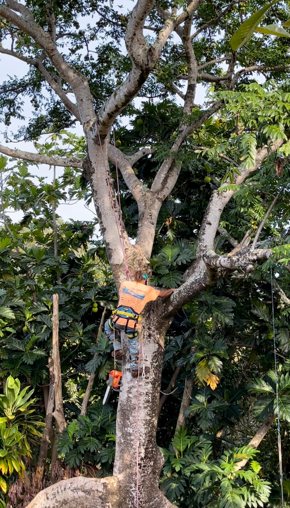

About Us

Pono Tree Service LLC is a small family-owned business on the island of Kaua'i. Jacob Akaka, one of the owners of the business, does all tree trimming with over 30 years of experience. As business partners, Jacob and Raquel Akaka obtained the necessary insurance, licenses, and certificates to legally operate a tree service business in Hawaii.
Trees are a long-term investment that require proper tree care. According to Trees Are Good, hiring an arborist ensures that homeowners trees stay healthy and are properly maintained. Tree work should always be performed by a trained and licensed professional.
Licenses and Insurance
Tree trimming in Hawai'i requires proper training, experience, and safety knowledge. According to the State of Hawaii Department of Human Resources Development, an individual tree trimmer (Non-Contractor) must have experience using equipment, understanding safety procedures, and may need a valid driver's license. In addition, many tree service companies must have a contractor's license and carry insurance such as liability and workers compensation to legally and safely operate in the state.
Tree work can also be dangerous without proper training and equipment. Workers oftern use ladders, chainsaws, and climbinggear, which require experience and safety knowledge. Professionals must follow safety protocols when climbing, trimming, and using tools. According to OSHA Tree Trimming Safety Tips, using proper equipment gear and safety procedures helps prevent injuries on the job.
These requirements help ensure that tree work is done safely and professionally, reducing the risk of property damage. Pono Tree Service LLC follows these standards to provide safe and reliable service to our customers.